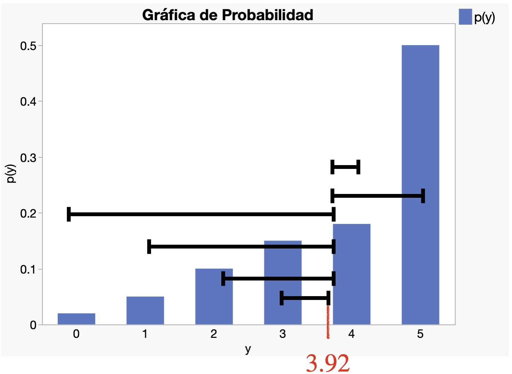
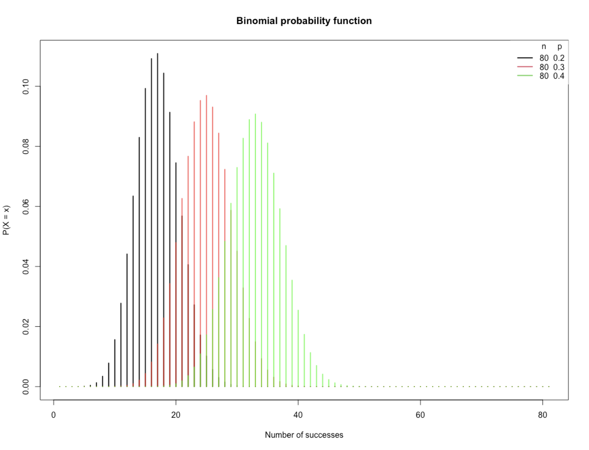

Distribuciones Discretas de Probabilidad
IN2032: Análisis Estadístico de Datos
Agenda
Introducción
Distribución de Bernoulli
Distribución Binomial
Introducción
Variables Aleatorias Discretas
Una variable aleatoria es discreta si sólo puede asumir un número finito de valores distintos.
Por ejemplo,
El número de bacterias por unidad de área.
Número de piezas defectuosas en un envío de 100 piezas.
El número de personas que están de acuerdo en una encuesta.
Notación
En lo que sigue, usaremos una letra mayúscula, como \(Y\), para indicar una variable aleatoria.
Usaremos letras minúsculas, como \(y\), para indicar un valor particular de la variable aleatoria.
Las expresiones \(P(Y=y)\) y \(p(y)\) denotan la probabilidad de que \(Y\) tome el valor \(y\).
Función de probabilidad
La descripción de los posibles valores de \(Y\) y las probabilidades de cada uno tiene un nombre: función de probabilidad.
La función de probabilidad de una variable aleatoria discreta \(Y\) es la función
\[p(y) = P(Y=y).\]
Para cualquier función de probabilidad, debe cumplirse lo siguiente:
- \(0 \leq p(y) \leq 1\) para todos los valores de \(y\).
- \(\sum_{y} p(y) = 1\), donde la suma es sobre todos los valores posibles de \(y\).
Ejemplo 1
Un hospital es conocido por el injerto de derivación de arteria coronaria. Sea \(Y\) el número de estas cirugías realizadas en un día.
La siguiente tabla muestra la distribución de probabilidad de la variable aleatoria \(Y\).
| \(Y = y\) | 0 | 1 | 2 | 3 | 4 | 5 |
|---|---|---|---|---|---|---|
| \(p(y)\) | 0.02 | 0.05 | 0.10 | 0.15 | 0.18 | 0.50 |
| \(Y = y\) | 0 | 1 | 2 | 3 | 4 | 5 |
|---|---|---|---|---|---|---|
| \(p(y)\) | 0.02 | 0.05 | 0.10 | 0.15 | 0.18 | 0.50 |
La probabilidad de que se realicen 2 cirugías es \(p(2) = 0.10\) o 10%.
La probabilidad de que se realicen 5 cirugías es \(p(5) = 0.50\) o 50%.
Como es una distribución de probabilidad, tenemos que \(p(0) + p(1) + p(2) + p(3) + p(4) + p(5) = 1\).
| \(Y = y\) | 0 | 1 | 2 | 3 | 4 | 5 |
|---|---|---|---|---|---|---|
| \(p(y)\) | 0.02 | 0.05 | 0.10 | 0.15 | 0.18 | 0.50 |
¿Cuál es la probailidad de que se realicen 6 cirugías?
\(p(6) = 0\) ya que no forma parte de la distribución de probabilidad.
Gráfica de probabilidad
Muestra las probabilidades para cada uno de los valores de una variable aleatoria.
Función de distribución acumulativa
La función de probabilidad especifica la probabilidad de que una variable aleatoria sea igual a un valor dado.
La función de distribución acumulativa especifica la probabilidad de que una variable aleatoria sea menor o igual a un valor dado.
La función de distribución acumulativa de la variable \(Y\) es la función
\[F(y) = P(Y \leq y).\] ## Ejemplo 1 (cont.)
| \(Y = y\) | 0 | 1 | 2 | 3 | 4 | 5 |
|---|---|---|---|---|---|---|
| \(p(y)\) | 0.02 | 0.05 | 0.10 | 0.15 | 0.18 | 0.50 |
La probabilidad que el numero de cirugías en un día sea menor o igual a 2 es:
\[P(Y \leq 2) = p(0) + p(1) + p(2) = 0.02 + 0.05 + 0.10 = 0.17.\]
Valor esperado
El promedio teórico o valor esperado de una variable discreta \(Y\) es igual a la suma de todos sus valores multiplicado por su probabilidad correspondiente. Técnicamente, el valor esperado de \(Y\) es
\[E(Y) = \sum_{y} y p(y),\]
donde la suma es sobre todos los posibles valores de \(Y\).
El valor esperado \(E(Y)\) es una constante.
Ejemplo 1 (cont.)
| \(Y = y\) | 0 | 1 | 2 | 3 | 4 | 5 |
|---|---|---|---|---|---|---|
| \(p(y)\) | 0.02 | 0.05 | 0.10 | 0.15 | 0.18 | 0.50 |
El promedio teórico o numero esperado de cirugías en un día es:
\[E(Y) = 0\times p(0) + 1\times p(1) + 2\times p(2) + 3\times p(3) + 4\times p(4) + 5\times p(5) = 3.92\]
Varianza y desviación estándar teóricas
La varianza teórica de una variable aleatoria \((Y - E(Y))^2\) es el valor esperado de \((Y\), donde \(E(Y)\) es el valor esperado de la variable aleatoria. Tecnicamente, la varianza de \(Y\) es
\[V(Y) = E\left[ (Y - E(Y))^2 \right] = \sum_{y} (y - E(Y))^2 p(y).\]
La desviación estándar de \(Y\) es la raíz cuadrada de \(V(Y)\).
La varianza y desviación estándar teóricas son constantes.
Ejemplo 1 (cont.)
| \(Y = y\) | 0 | 1 | 2 | 3 | 4 | 5 |
|---|---|---|---|---|---|---|
| \(p(y)\) | 0.02 | 0.05 | 0.10 | 0.15 | 0.18 | 0.50 |
La varianza del numero de cirugías en un día es:
\[V(Y) = \sum_{y} (y - 3.92)^2 p(y) = (0 - 3.92)^2 \times p(0) + (1 - 3.92)^2 \times p(1) + \cdots + (5 - 3.92)^2 \times p(5) = 1.81\]
La varianza es una medida de dispersión de los valores de \(Y\) alrededor de \(E(Y)\) donde se pondera la probabilidad de este valor.

Distribución de Bernoulli
La distribución de Bernoulli
Usamos la distribución de Bernoulli cuando tenemos un experimento que tiene dos posibles resultados. Un resultado se denomina “éxito” y el otro resultado se denomina “fracaso”.
La probabilidad de éxito se denota por \(p\). La probabilidad de fracaso es entonces \(1-p\).
Un experimento de este tipo se llama experimento de Bernoulli con probabilidad de éxito \(p\).
Ejemplo 2
El experimento Bernoulli más sencillo es lanzar una moneda al aire. Los dos resultados son cara y cruz. Si definimos cara como el resultado del éxito, entonces \(p\) es la probabilidad de que la moneda salga cara. Para una moneda justa, \(p = 0.5\).
Otro experimento Bernoulli es la selección de un componente de una población de componentes, algunos de los cuales son defectuosos. Si definimos “éxito” como un componente defectuoso, entonces \(p\) es la proporción de componentes defectuosos en la población.
Para un experimento Bernoulli, definimos la variable \(Y\) como sigue:
Si el experimento resulta en “éxito”, entonces \(Y=1\). De lo contrario, \(Y=0\).
Esto implica que \(Y\) es una variable aleatoria discreta con función de probabilidad \(p(y)\):
\(p(0) = P(Y = 0) = 1 - p.\)
\(p(1) = P(Y = 1) = p.\)
\(p(y) = 0\) para cualquier otro valor de \(y\) diferente de 0 o 1.
Notación
Si la distribución de \(Y\) es la distribución de Bernoulli, decimos que “\(Y\) sigue una distribución de Bernoulli”.
Matemáticamente, decimos \(Y \sim \text{Bernoulli}(p)\) donde el símbolo ‘\(\sim\)’ se lee como ‘sigue’.
En esta notación, enfatizamos que la distribución de Bernoulli tiene un parámetro (constante) denotado por \(p\), que representa la probabilidad de éxito.
Media y varianza
Si \(Y \sim \text{Bernoulli}(p)\), entonces
El promedio teórico de \(Y\) es \(p\).
La varianza teórica de \(Y\) es \(p(1-p)\).
Distribución Binomial
Motivación
Un ejemplo de un experimento Bernoulli es tomar muestras de un solo componente de un lote y determinar si está defectuoso.
En la práctica, podríamos tomar muestras de varios componentes de un lote muy grande y contar el número de defectuosos entre ellos.
Esto equivale a realizar varios experimentos Bernoulli independientes y contar el número de éxitos.
El número de éxitos es entonces una variable aleatoria, que se dice que tiene una distribución binomial.
\(Y\) tiene la distribución binomial con parámetros \(n\) y \(p\), si:
Se realizan un total de \(n\) experimentos de Bernoulli.
Los experimentos son independientes.
Cada experimento tiene la misma probabilidad de éxito \(p\).
\(Y\) es el número de éxitos en los \(n\) experimentos.
En este caso, \(Y\sim\text{Bin}(n,p)\) donde \(n\) y \(p\) son los parámetros (constantes) de la distribución.
La distribución binomial
Si \(Y\sim\text{Bin}(n,p)\), la función de probabilidad \(Y\) es
\(P(Y = y) = {n \choose y}p^y (1 -p)^{n -y},\)
donde \(y = 0, 1, \ldots, n\) y \(0 \leq p \leq 1\).
Elementos
\(P(Y = y) = {n \choose y}p^y (1 -p)^{n -y},\)
\(p^y\): Probabilidad de \(y\) éxitos.
\({n \choose y}\): Numero de posibles combinaciones de \(y\) exitos en \(n\) experimentos Bernoulli.
\((1 -p)^{n -y}\): Probabilidad de que los otros \(n-y\) experimentos sean fracasos.
Si \(Y\sim\text{Bin}(n,p)\), tenemos que
El promedio teórico de \(Y\) es \(np\).
La varianza teórica de \(Y\) es \(np(1-p)\).
Debemos de pensar en \(\text{Bin}(n,p)\) como una familia de distribuciones.
Cada miembro de esa familia tiene una combinación de valores para los parámetros \(n\) y \(p\).
Cada miembro tiene una función de probabilidad diferente.

Calculo de probabilidades en Python
Una variable aleatoria binomial se puede expresar como una suma de variables aleatorias de Bernoulli:
Supongamos que se realizan \(n\) experimentos independientes de Bernoulli.
Cada experimento tiene probabilidad de éxito \(p\).
Considera las variables \(Y_1, \ldots, Y_n\) donde \(Y_i = 1\) si el resultado del i-ésimo experimento es éxito, y \(Y_i = 0\) de otro modo. Es decir \(Y_i \sim \text{Bernoulli}(p)\).
Ahora, considera la suma del número de éxitos entre los \(n\) experimentos \(X = Y_1 + \cdots + Y_n\).
Entonces, \(X \sim \text{Bin}(n,p)\).
Pregunta de práctica para examen
Se disparan seis misiles contra un objetivo determinado. La probabilidad de que un misil alcance el objetivo es del 75%.
¿Cuál es la probabilidad de que de los seis misiles disparados (a) exactamente cinco den en el blanco, (b) al menos tres darán en el blanco, (c) ¿los seis darán en el blanco?